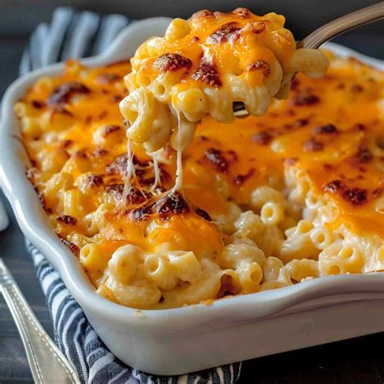

<!DOCTYPE html>
<html>
    <head>

    </head>
</html>

<h1>Matt Tomossonie</h1>
<p>
    Hi! My name is Matt, and I'm from Rockville Centre, New York. One of my biggest interests is music, whether it be performing or listening. 
    When it comes to listening, my music taste is kind of all over the place (j-pop, vocaloid, edm, metal, just to name a few) but I do not listen to much rap or country. 
    I have also been playing instruments since elementary school, starting with the trumpet in 4th grade, eventually learning the euphonium in 6th grade, trombone in 11th grade and the drums over the summer of senior year.
    I participated in my school's wind ensemble, jazz ensemble, pep band, symphony orchestra and pit orchestra over my 4 year tenure, and started a band with some friends for fun last summer.
    
    I have also been playing baseball since 2nd grade, primarily as a pitcher. I made it to the JV level in 9th grade, but I couldn't continue much further due to an arm injury.
    My favorite team is the mets (sadly), but I haven't been following the league as closely as I have in the past. 
    I still love the sport nonetheless.

    I am also a bit of a gamer. My favorite game is Geometry Dash, and I have been a somewhat active member of the community for a few years now.
    My current hardest completion is a level called Requiem, which is currently the 339th hardest level in the game, but I have many other notable completions, such as Wasureta (#360), and progress on other difficult levels like Cold Sweat (#179), Calculator Core (#183) and obsession (#222).
    I also hold the record for the hardest level verified on a 60hz mobile device (playing the game on 60hz mobile is notoriously harder than on pc or other input devices).
    Some other games I play include beat saber and pokemon vgc. 
</p>

<h2>Some things I am looking forward to learning in SWEN 101 include: </h2>
<li> - scrumming </li>
<li> - interview skills </li>
<li> - the process of designing software </li>



